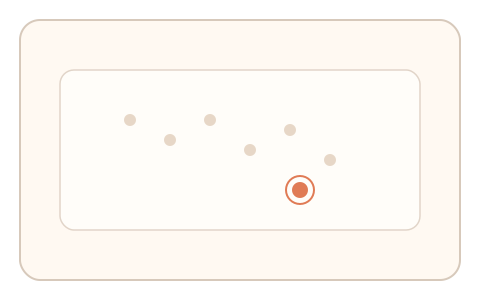
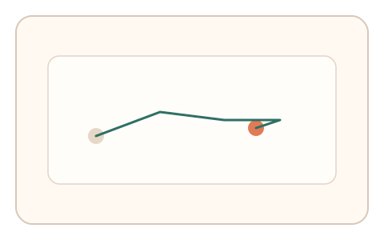

#131
E：双底座耦合 × 双信号 × 多阶段/双任务（认知偏置 + 生理/时域）
已扩展
搜索路径‑过冲回拉
在干扰图中搜索目标并点击，记录搜索路径效率与过冲回拉比例。
概念原文
用户在干扰图中找到目标并移动点击，系统比较搜索路径长度与终点过冲‑回拉比例的任务内一致性。
结合“注意力路径”和“运动学纠偏”双特征。
研究背景
视觉搜索路径体现注意力策略，运动点击过程受 Fitts 定律影响会产生过冲与修正。两者组合能区分自动化轨迹。
核心机制
- 提供干扰项较多的搜索场景。
- 用户移动指针寻找并点击目标。
- 记录路径长度、速度与过冲回拉。
- 在多试次中比较一致性。
用户流程
- 步骤 1：用户看到含多干扰项的场景。
- 步骤 2：移动指针找到并点击目标。
- 步骤 3：系统分析路径效率与过冲回拉。
判定信号
搜索路径效率
真实搜索通常非最短路径且具停顿。
过冲‑回拉比例
人类运动常出现超调与修正。
判定逻辑
路径效率与过冲比例需符合人类范围且跨试次稳定；过直或零过冲判异常。
对抗面
- 脚本直接计算最短路径点击
- 远程人工标注后重放
防御与缓解
- 随机化目标位置与干扰项
- 加入动态干扰或短暂遮挡
- 叠加停顿/速度信号多维判定
可达性与风险
提供更大目标与键盘替代，降低精细操作负担。
- 指针设备差异导致路径变化
- 高延迟使过冲增加
可视化状态

状态 1：搜索场景
多干扰项中寻找目标。

状态 2：路径与过冲
记录搜索路径与过冲回拉。
状态 3：双信号判定
比较路径效率与过冲比例。
参考资料
Visual search
说明视觉搜索策略。
Fitts's law
说明运动到达与过冲修正。